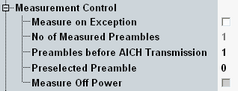

The "Measurement Control" parameters configure the scope of the WCDMA PRACH measurement.

The hotkey "Assign Views" selects the view types to be displayed in the overview. The R&S CMW does not evaluate the results for disabled views. Therefore, limiting the number of assigned views can speed up the measurement. Press the softkey PRACH to activate the hotkey.
Remote command:Specifies whether measurement results that the R&S CMW identifies as faulty or inaccurate are rejected. A faulty result occurs, for example, when an overload is detected. In remote control, the cause of the error is indicated by the "reliability indicator".
- Off: Faulty results are rejected. The measurement is continued. The statistical counters are not reset. Use this mode to ensure that a single faulty result does not affect the entire measurement.
- On: Results are never rejected. Use this mode for development purposes, if you want to analyze the reason for occasional wrong transmissions.
Defines the number of preambles to be measured.
In the standalone (SA) scenario, this parameter is controlled by the measurement. In the combined signal path (CSP) scenario, it is controlled by the signaling application.
Automatic configuration - depends on the value of "Preambles before AICH Transmission" (CSP).
The number of preambles to be received before AICH transmission is a signaling parameter added to the measurement dialog for fast access.
- If it is set to 1, exactly one preamble is measured; the off power is not measured:
"No of Measured Preambles" = 1, "Measure Off Power" = off - If it is set to a value from the interval [2, 6], all but the last preamble are measured; the last preamble is used to determine the off power:
"No of Measured Preambles" = "Preambles before AICH Transmission" - 1, "Measure Off Power" = on - If it is set to a value greater 6, first five preambles are measured; the off power is not measured:
"No of Measured Preambles" = 5, "Measure Off Power" = off
This parameter is available in the combined signal path (CSP) scenario only. It is controlled by the signaling application.
Remote command:Selects one preamble within the range of measured preambles. This preamble is used to determine all single preamble results, i.e. the "... vs. Chip" results and the I/Q diagram.
The single preamble results are only available for the preselected preamble. To derive the results for another preamble, modify the parameter and repeat the measurement.
In the standalone (SA) scenario, this parameter is controlled by the measurement. In the combined signal path (CSP) scenario, it is controlled by the signaling application.
Fixed value 0 (CSP)
Selects whether the off power is measured (before and after the last preamble) or not.
While the combined signal path scenario is active, this parameter is set automatically. If at least two preambles are available, it is enabled, else disabled. The number of available preambles is determined by the signaling parameter "Preambles before AICH Transmission".
Remote command: